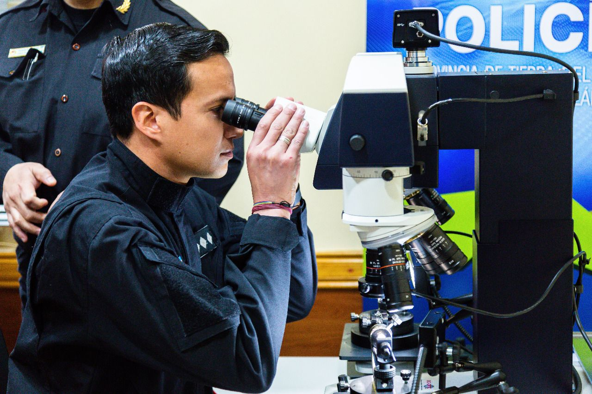

Sobre a Polícia Científica
A Polícia Científica realiza perícias técnicas e científicas, contribuindo com provas materiais em investigações criminais. Atua em laboratórios, necrotérios e locais de crime.
Requisitos para Ingresso
- 📌 Curso superior completo (ex: Medicina, Biomedicina, Engenharia, etc);
- 📝 Aprovação em concurso público estadual;
- 🧪 Curso de formação técnico-pericial.
